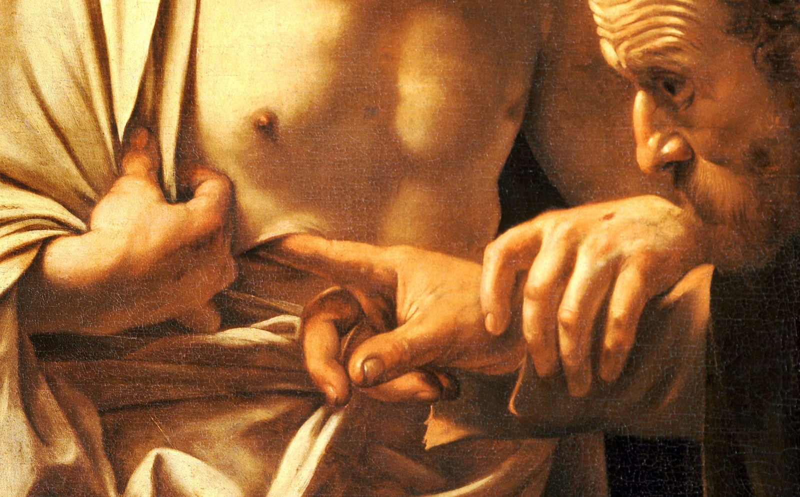
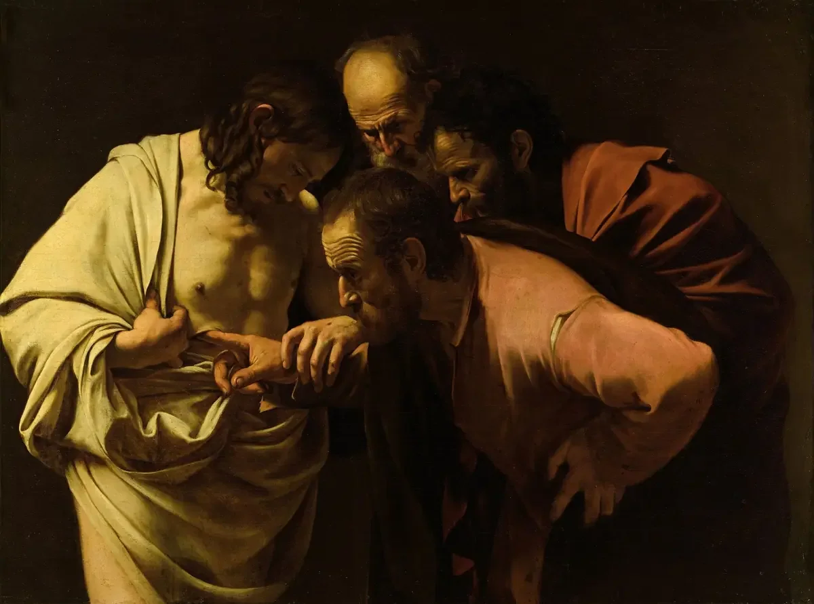
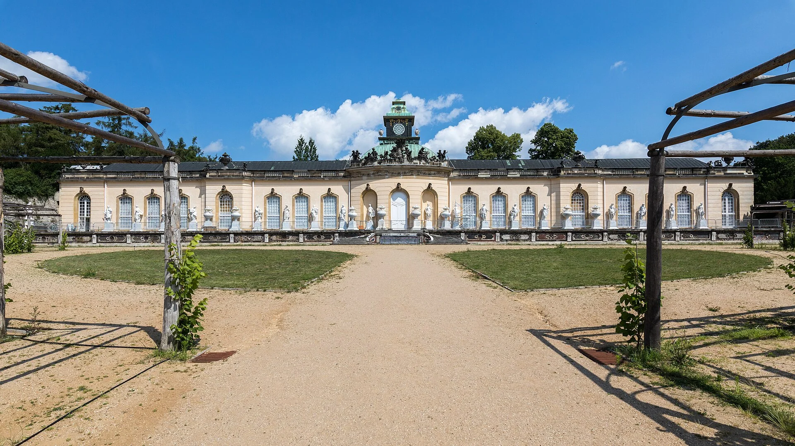
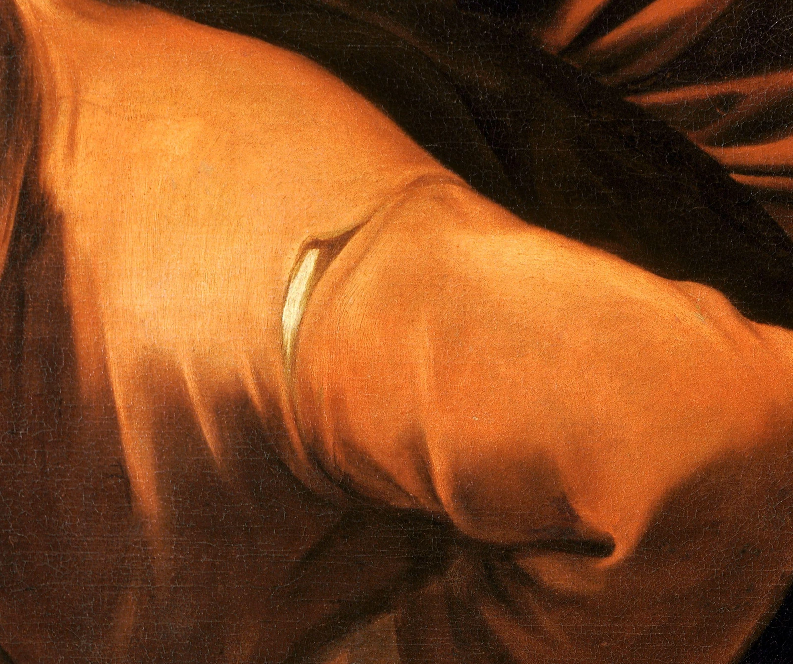
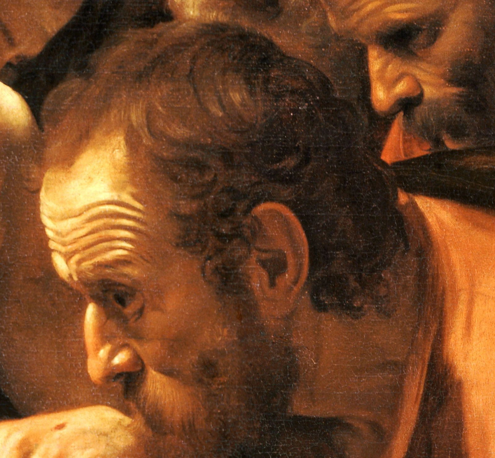

아직 펼치지 않은 카드빛과 어둠 사이의 얼굴 · 1카라바조 「의심하는 도마」부활한 예수를 믿지 못한 제자가 있었어요. 예수는 그를 꾸짖었을까요, 아니면 무엇을 했을까요?의심 많은 제자에게 예수님이 어떻게 하셨을까?
1601년 무렵이탈리아 로마에서 그림 · 지금은 독일 포츠담 상수시 회화관
카라바조 「의심하는 도마」
1601년 무렵 로마에서, 화가 카라바조(Caravaggio)는 부활한 예수의 상처에 제자 도마(Thomas)의 손가락이 닿는 순간을 그렸어요. 도마는 ‘직접 보고 만져 보기 전에는 믿지 않겠다’고 말했던 사람이에요. 그림 속 제자들처럼 머리를 맞대고, 작은 것들을 하나씩 가까이 들여다보세요.
예수님의 제자 도마는 “내 눈으로 보고 만져 봐야 믿을 거야!” 했대. 그런데 예수님이 도마의 손을 잡아 주셨어. 그림 속 제자들처럼 우리도 가까이 들여다볼까?
검수 전 시안이에요(기준서 1판). 장면에는 기록에 있는 것만 옮겼고, 그림 풀이는 누가 그렇게 보는지 밝혔어요. 상상은 ‘눈 감고 상상해 보기’에만 썼어요.
시안 확인용카드 단계 미리 보기
1
그날, 도마는 없었어요
부활한 예수가 처음 제자들에게 나타났을 때, 열두 제자 가운데 하나인 도마는 그 자리에 없었어요.
다른 제자들이 “우리가 주님을 보았다”고 하자, 도마는 그 손의 못 자국을 보고 그 자국에 손가락을 넣어 보고, 손을 옆구리에 넣어 보기 전에는 믿지 않겠다고 했어요(요한복음 20장 24~25절). 못 자국은 십자가에 못 박힐 때 생긴 상처예요.

도마는 그날 친구들과 같이 있지 않았어. 그래서 “내 눈으로 보고 만져 봐야 믿을 거야!” 했대.
물어보기도마는 왜 직접 만져 보고 싶었을까?
2
여드레 뒤, 그 손가락
여드레(여덟 날) 뒤, 제자들이 다시 집 안에 모였어요. 이번에는 도마도 함께 있었어요. 문들이 닫혀 있었는데 예수가 들어와 가운데 섰어요.
예수는 도마에게, 손가락을 내밀어 예수의 손을 보고 손을 내밀어 예수의 옆구리에 넣어 보라고 했어요(요한복음 20장 26~27절). 카라바조는 바로 그 손가락이 상처에 닿은 순간을 그렸어요.
우리도 머리를 맞댄 제자들 곁에 섰어요. 그림 속 작은 것들을 하나씩 눌러 보고, ‘가까이 보기’로 크게 들여다보세요.

카라바조, 「의심하는 도마」, 1601년 무렵, 캔버스에 유화, 107×146cm · 포츠담 상수시 회화관 · 그림: 카라바조 · 퍼블릭 도메인 · 위키미디어 공용
그림 위의 숫자나 아래 번호를 눌러 보세요.
여섯 곳을 다 찾았어요. SPSG의 설명처럼, 그림 앞의 우리도 그 방의 증인처럼 곁에서 지켜봤어요.
“성 도마가 주님의 옆구리 상처에 손가락을 넣고, 주님은 그 손을 끌어당기며 가슴에서 수의를 젖힌다.”
조반니 피에트로 벨로리, 『근대 화가·조각가·건축가 열전』(1672) · 영어 번역에서 이 안내서가 옮김
수의는 장례 때 몸을 감싸는 천이에요. 벨로리(Giovanni Pietro Bellori)는 카라바조가 세상을 떠나고 60여 년 뒤인 1672년에 화가들의 전기를 펴낸 사람이에요. 그는 이 그림을 빈첸초 주스티니아니(Vincenzo Giustiniani) 후작을 위해 그린 그림으로 적었어요.
여드레 뒤 그 방에서, 내가 도마라면 어떻게 했을까요?
예수님이 도마의 손을 잡아 상처에 대 주셨어. 다른 제자들도 머리를 맞대고 들여다봐.
물어보기도마의 손가락은 어디에 있어?
3
어두운 방, 위에서 내리는 빛
이 얼굴은 같은 시대 로마의 화가 오타비오 레오니(Ottavio Leoni)가 그린 카라바조예요. 카라바조는 1571년에 태어나 1610년에 세상을 떠났어요.
「의심하는 도마」는 로마의 주스티니아니 형제, 곧 베네데토 추기경과 빈첸초 후작의 집에 있었어요. 추기경은 가톨릭교회의 높은 성직자이고, 후작은 귀족의 칭호예요. 형제의 집에는 카라바조의 그림이 모두 15점 있었어요.

벨로리는 카라바조가 인물들을 닫힌 방의 어두운 갈색 공기 속에 두고, 높은 곳에서 수직으로 내려오는 빛으로 몸의 중요한 부분을 비추었다고 적었어요.
그림을 가진 프로이센 궁전·정원 재단(SPSG)은, 이 그림에서 빛이 왼쪽에서 들어와 예수와 도마를 비춘다고 설명해요.
이 아저씨가 그림을 그린 카라바조야. 어두운 방에 위에서 빛을 비춰 사람들을 그렸대.
물어보기도마 그림에서 빛은 어느 쪽에서 들어오는 것 같아?
4
‘덜 좋은 그림’이라던 그림
1815년, 프로이센 왕 프리드리히 빌헬름 3세(Friedrich Wilhelm III)가 주스티니아니 집안의 그림들을 사들였어요. 베를린에 세울 공공 미술관을 생각해서였어요.
그런데 1830년 베를린에 문을 연 왕립 미술관은 이 그림을 수준이 덜하다고 보고 걸지 않았어요. 함께 온 다른 카라바조 그림들은 걸었는데도요.

그림은 대신 베를린 궁전의 회화관에 걸렸다가, 1855~1856년에 포츠담 상수시 공원의 회화관으로 옮겨졌어요(SPSG).
옛날에는 “덜 좋은 그림”이라며 걸지 않았대. 지금은 이 노란 건물 안에 걸려 있어.
물어보기이 그림 앞에 서면, 무엇부터 들여다볼래?
눈 감고 상상해 보기
문들이 닫힌 방 안은 어둑해요. 높은 곳 어딘가에서 들어온 빛이 흰 천과 맨살을 비춰요. 숨소리가 들릴 만큼 가까이, 네 사람의 머리가 한곳으로 모여요. 손가락 끝이 상처에 닿는 순간, 아무도 말하지 않아요.
눈을 감아 봐. 문이 꼭 닫힌 방이야. 위에서 빛이 살짝 들어와. 친구들이 머리를 맞대고, 숨을 죽이고 들여다봐.
나의 자리
‘만져 봐야 믿겠다’던 도마예요. 예수가 먼저 그 손을 잡아 상처로 이끌 때, 도마의 마음에는 무엇이 일어났을까요?
예수님이 먼저 도마의 손을 잡아 주었을 때, 도마는 어떤 마음이었을까?
마음에 닿는 한 줄을 고르거나 직접 써 보세요. 한 줄을 남기면 이 자리의 도장이 찍혀요. 이 기기에만 저장돼요.
더 깊이
이야기를 보다 궁금해질 만한 것들이에요. 답을 읽거나 짧은 영화로 보세요.

베를린의 미술관은 왜 이 그림을 ‘덜 좋다’고 했을까요?

그래서 예수는 도마를 꾸짖었나요?
뒷이야기
아직 펼치지 않은 이야기예요. 누르면 이야기가 펼쳐지고 색이 돌아와요. 더 알고 싶으면 근거를 따라가 보세요.
다 펼치면, 다음에 오실 때 새 이야기가 찾아와요.
오늘의 뒷이야기는 여기까지예요. 다음에 오시면 새 이야기가 기다리고 있어요.
펼친 뒷이야기 · 누르면 다시 볼 수 있어요
더 찾아보기
기록마다 다른 점
빛은 어디서 들어오나 벨로리는 높은 곳에서 수직으로 내려오는 빛이라고 적었고, 그림을 가진 SPSG는 왼쪽에서 들어오는 빛이라고 설명해요.
언제 그렸나 그림을 가진 SPSG의 소장 기록은 1601년, 위키미디어 공용과 이 카드 책 앞면은 1601~1602년 무렵으로 적어요.
정말 만졌을까 요한복음에는 예수가 만져 보라고 한 말(27절)과 도마의 고백(28절)이 있지만, 도마가 실제로 손을 넣었다는 말은 없어요. 그림은 손가락이 들어간 순간을 그렸어요.
두 제자는 누구일까 영어 위키백과는 베드로와 요한일 것이라고 적지만, SPSG의 설명은 ‘두 제자’라고만 해요. 이 카드도 이름을 붙이지 않았어요.
함께 읽는 말씀
말씀은 뜻만 옮기고, 본문은 대한성서공회 개역개정으로 이어 드려요.
요한복음 20장 24~29절 도마가 없던 날, ‘보고 만져 보기 전에는 믿지 않겠다’는 말, 여드레 뒤의 만남, 도마의 고백, 그리고 보지 못하고 믿는 사람은 복이 있다는 예수의 말이 이어져요.
직접 가 보기
확인한 날 · 2026년 11월 18일 · 바뀌기 쉬운 정보라 정기적으로 다시 확인해요
포츠담 상수시 공원의 회화관(Bildergalerie)에 걸려 있어요. 이 회화관은 프리드리히 대왕이 1755년부터 1763년(또는 1764년)까지 지었어요. SPSG는 이곳을 독일에 남아 있는 가장 오래된 그림 전시관 건물로 소개하고, 지금 여기서 볼 수 있는 그림으로 카라바조의 「의심하는 도마」를 꼽아요. 회화관은 4월부터 10월까지만 열고, 수요일부터 일요일까지 오전 10시~오후 5시 30분이에요. 마지막 입장은 닫기 30분 전이에요. 11월부터 3월까지는 문을 닫아요.
입장료는 8유로(할인 6유로)예요. 가기 전에 SPSG 누리집에서 다시 확인하세요.
그림 속 여섯 곳 금박
그림 속 여섯 곳을 모두 찾아 읽으면 카드에 금박이 입혀져요.
그림 속 여섯 곳을 모두 찾아 읽기
그 방의 도마라면 채색
둘 가운데 하나만 해도 카드가 채색돼요.
여드레 뒤 그 방, 도마라면 어떻게 했을지 고르기
아이와 함께 ‘영화처럼 보기’를 끝까지 보기
근거 보기 (10)
- SPSG 소장 기록(museum-digital, 독일어): 「의심하는 도마」 — 1601년, 107×146cm, 왼쪽에서 드는 빛, 예수가 도마의 손을 상처로 이끎, 이마를 찌푸린 두 제자, 증인처럼 지켜보는 관람자, 주스티니아니 컬렉션의 카라바조 15점, 보네메종, 1815년 구입, 1830년 왕립 미술관에서 걸지 않음, 베를린 궁전 회화관, 1855/1856년 상수시
- SPSG 누리집: 상수시 회화관 — 독일에 남은 가장 오래된 그림 전시관 건물, 프리드리히 대왕 1755~63(또는 64), 「의심하는 도마」, 4~10월 수~일 10:00~17:30, 마지막 입장 30분 전, 8유로·할인 6유로
- 구글 아츠 앤 컬처(SPSG 해설, 독일어): 베네데토 추기경과 빈첸초 후작 형제, 팔라초 주스티니아니의 카라바조 15점, 보네메종, 1815년, 1601년 무렵
- 조반니 피에트로 벨로리 「카라바조의 생애」 영어 번역(PDF): 빈첸초 주스티니아니를 위해 그린 성 도마, 손을 끌어당기고 수의를 젖히는 주님, 닫힌 방의 어두운 갈색 공기와 높은 곳에서 수직으로 내리는 빛, ‘모델 말고는 다른 스승을 인정하지 않았다’
- 브리태니커 백과사전: Giovanni Pietro Bellori — 『근대 화가·조각가·건축가 열전』 1672년 출간
- 브리태니커 백과사전: Caravaggio — 1571년 출생, 1610년 사망
- 암스테르담 국립미술관: 테르브뤼헨 「의심하는 도마」 해설 — 1622년 무렵, 카라바조 그림이 분명한 바탕, 주스티니아니 컬렉션, 뒤집은 구도, 네 번째 제자, 안경 쓴 노인
- 대한성서공회 개역개정: 요한복음 20장 24~29절
- 위키미디어 공용: 오타비오 레오니가 그린 카라바조 — 1621년 무렵, 피렌체 마루첼리아나 도서관
- 영어 위키백과: The Incredulity of Saint Thomas (Caravaggio) — 길잡이로만(뒤의 두 제자를 베드로와 요한으로 짐작, 1601~1602년 무렵)
그림·사진·소리 출처
- 그림: 카라바조 · 퍼블릭 도메인 · 위키미디어 공용
- 그림: 카라바조 · 퍼블릭 도메인 · 위키미디어 공용
- 그림: 오타비오 레오니 · 퍼블릭 도메인 · 위키미디어 공용
- 그림: 헨드릭 테르브뤼헨 · 퍼블릭 도메인 · 위키미디어 공용
- 사진: Raimond Spekking · CC BY-SA 4.0 · 위키미디어 공용
- 그림: 카라바조 · 퍼블릭 도메인 · 위키미디어 공용
- 그림: 카라바조 · 퍼블릭 도메인 · 위키미디어 공용
- 그림: 카라바조 · 퍼블릭 도메인 · 위키미디어 공용
- 그림: 카라바조 · 퍼블릭 도메인 · 위키미디어 공용
- 그림: 헨드릭 테르브뤼헨 · 퍼블릭 도메인 · 위키미디어 공용
- 그림: 카라바조 「의심하는 도마」(1601~1602년 무렵) · 퍼블릭 도메인 · 위키미디어 공용
‘처음 만나는 기독교 문화’의 깊은 카드예요. 사람 얼굴이 알아볼 만큼 나오는 사진은 쓰지 않았어요. 카드 단계와 남긴 글은 이 기기에만 저장돼요.